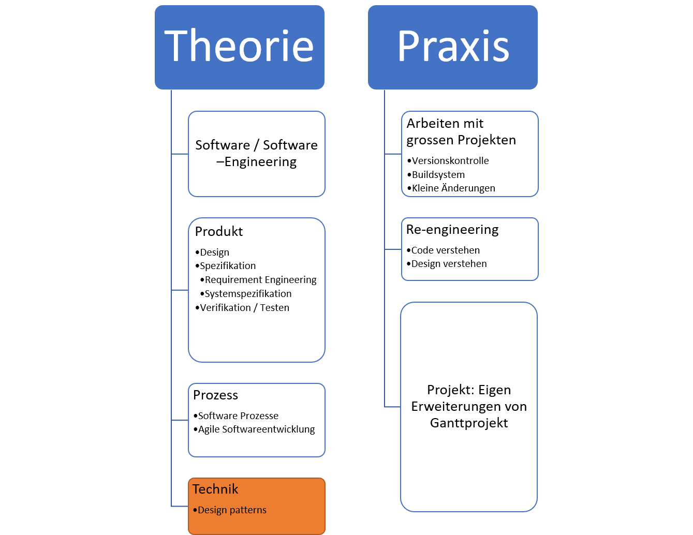
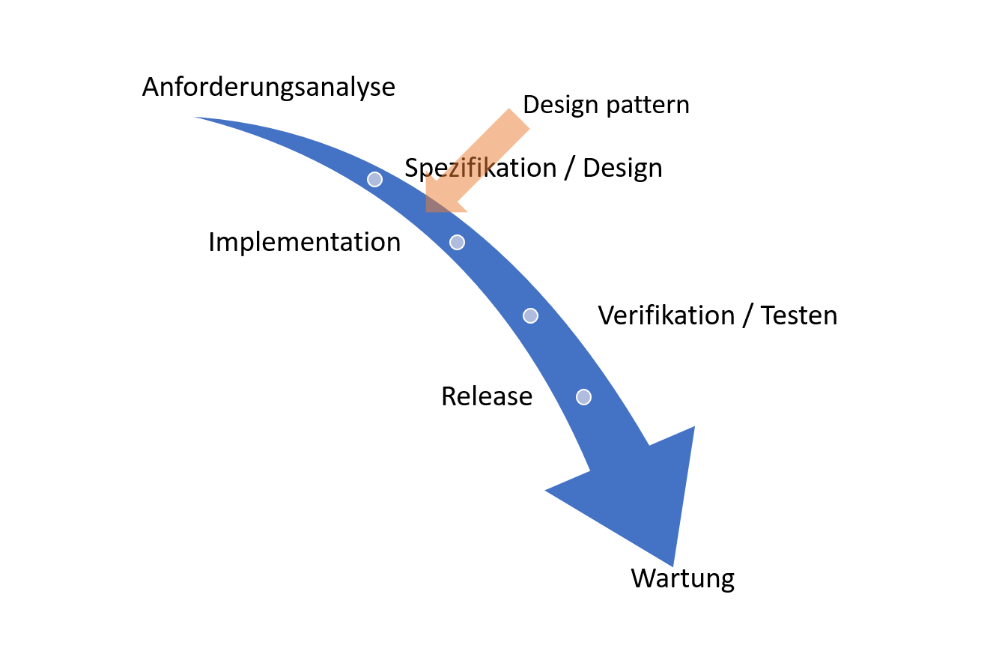

Design Patterns
Marcel Lüthi Departement Mathematik und Informatik
"Abstraction should follow experience, not precede it."
Michael Atiyah
Einordnung
Design Pattern: Bewährte Lösungsansätze für wiederkehrende Designprobleme.


Ursprung

- Idee stammt aus Architektur
- Eingeführt in Software von "Gang of four"
- Muster wurden auch vorher benutzt
- Nicht katalogisiert und formal niedergeschrieben
- Expertenwissen
Warum Design Patterns
Ein Design Pattern "standardisiert" den Lösungsansatz
- Bauteil für den Designer
- Vereinfacht Kommunikation
- Vereinfacht Lesen/Verstehen von Code
Klassifikation von Patterns
- Erzeugungsmuster (Creational Patterns)
- Strategien um Objekte zu erzeugen
- Strukturmuster (Structural Patterns)
- Strategien um Beziehungen zwischen Klassen zu realisieren
- Verhaltensmuster (Behavioral Patterns)
- Strategien um Kommunikation zwischen Objekten zu realisieren
Gang of Four Patterns
Erzeugungsmuster
- Abstrakte Fabrik
- Erbauer
- Fabrikmethode
- Prototyp
- Singleton
Strukturmuster
- Adapter
- Brücke
- Dekorierer
- Fassade
- Fliegengewicht
- Kompositum
- Proxy
Verhaltensmuster
- Befehl
- Beobachter (Observer)
- Besucher
- Interpreter
- Iterator
- Memento
- Schablonenmethode
- Strategie
- Vermittler
- Zustand
Designproblem 1
Manchmal darf es nur eine Instanz von einem Objekt geben.Beispiele:
- Es gibt viele Drucker aber nur einen Druckerspooler
- Es sollte nur ein Windowmanagement geben
- Ein Buchhaltungssytem dient nur genau einer Firma
Singleton Pattern
- Es soll genau eine Instanz einer Klasse geben
- Diese soll durch Unterklassen erweiterbar sein

Singleton Pattern
Definition:
public final class Singleton {
private static final Singleton instance = new Singleton();
private Singleton() {}
public static Singleton getInstance() {
return instance;
}
}
Singleton singletonInstance = Singleton.getInstance()
Designproblem 2
Ein System soll unabhängig davon sein wie seine "Produkte" (Objekte) erzeugt werden soll.
- Beispiel: GUI Bibliothek soll Widget Klassen mit verschiedenen Look and Feels unterstützen
Abstract Factory
- Methode um Typ (Klasse) von kreiertem Objekt zu bestimmen, ohne diesen explizit angeben zu müssen.
- Verschiedene Factory Implementation erlauben es verschiedene Subtypen zu kreieren.
Abstract Factory
Abstract Factory
- Beispiel, adaptiert aus Ganttproject
public interface ICalendarFactory {
Calendar newCalendar();
}
class DefaultCalendarFactory implements ICalendarFactory {
@Override public Calendar newCalendar() {
return new GanttCalendar(...);
}
}
public Date adjustLeft(ICalendarFactory factory, Date d) {
Calendar c = factory.newCalendar();
while (c.get(Calendar.DAY_OF_WEEK) != c.getFirstDayOfWeek()) {
...
}
}
Designproblem 3
Der Algorithmus zum Erzeugen eines komplexen Objekts soll unabhängig von den Teilen sein, aus denen das Objekt besteht und wie sie zusammengesetzt werden.
class Task {
private int a;
private String b;
...
private double z;
public Task(int a, String b, ..., double z)
}
- Kann ich ein Objekt kreieren, indem ich nur Wert für b angebe?
Builder Pattern
- Vereinfacht Erzeugung von komplexen Objekten


Builder Pattern
- Beispiel adaptiert aus Ganttproject
abstract class TaskBuilder {
Integer myId;
TimeDuration myDuration;
...
public TaskBuilder withId(int id) {
myId = id; return this;
}
public TaskBuilder withDuration(TimeDuration duration) {
myDuration = duration; return this;
}
...
public abstract Task build();
}
}
Builder Pattern
- Beispiel adaptiert aus Ganttproject
class TaskBuilderImpl extens TaskBuilder {
@override public Task build() {
if (myId == null || myTaskMap.getTask(myId) != null) {
myId = getAndIncrementId();
}
if (myDuration != null) {
duration = myDuration;
} else {
duration = (myEndDate == null) ? createLength(defaultTimeUnit(), 1.0f)
: createLength(defaultTimeUnit(), myStartDate, myEndDate);
}
...
}
}
Task newTask = new TaskBuilderImp().withId(1).withDuration(10).build();
Designproblem 4
Wenn ein Projekt stark modularisiert ist, eine Klasse jedoch viele Module nutzen muss, kommt es zu einer starken Kopplung der KlassenBeispiel:
- Um eine GUI anzusteuern braucht man gleichzeitig Window, Statusbar, Menubar, ...
- Klient koppelt sich an alle diese GUI Elemente
- Schnittstellen sind e.v. auch inkonsistent
Facade Pattern
- Bietet einheitliche Schnittstelle zu verschiedenen Subsystemen an.
- Reduziert Kopplung.
Facade Pattern
- Adaptiert aus Ganttproject
class UIFacade {
private final JFrame myMainFrame;
...
private final GanttStatusBar myStatusBar
public void setStatusText(String text) {
myStatusBar.setFirstText(text, 2000);
}
public void setWorkbenchTitle(String title) {
myMainFrame.setTitle(title);
}
}
Designproblem 5
Eine Menge von Objekten muss über Zustandsänderungen informiert werden, jedoch möchte man die Klassen nicht eng aneinander koppeln.
Beispiel Tabellenkalkulation:
- Trennung von GUI (Anzeige) und Datenhaltung
- Wenn sich Daten ädern sollen sich folgende Dinge ändern
- Darstellung der entsprechenden Zelle
- Diagramme die auf Daten zugreifen
- Berechnete Zellen
Observer Pattern
- Automatische Benachrichtigung von $n$ Objekten
Observer Pattern
- Adaptiert aus Ganttproject
public interface RoleManager {
public interface Listener extends EventListener {
public void rolesChanged(RoleEvent e);
}
private final List<Listener> myListeners = new ArrayList<Listener>();
public void addRoleListener(Listener listener) { myListeners.add(listener);}
void fireRolesChanged(RoleSet changedRoleSet) {
for (Listener l : myListeners) {
l.rolesChanged(new RoleEvent(this, changedRoleSet));
}
}
public Role createRole(String name, int persistentID) {
...
myRoleManager.fireRolesChanged(this);
}
}
Observer Pattern
- Adaptiert aus Ganttproject
public class ResourceTreeTable extends GPTreeTableBase {
...
public ResourceTreeTable(IGanttProject project, ...) {
myRoleManager = project.getRoleManager();
myRoleManager.addRoleListener(new RoleManager.Listener() {
@Override public void rolesChanged(RoleEvent e) {
setEditor(getTableHeaderUiFacade().findColumnByID(
ResourceDefaultColumn.ROLE.getStub().getID()));
}
});
...
}
Design Patterns im Kontext
- Design Patterns leben im Kontext von Programmiersprachen/Paradigmen
- Verschiedene Sprachen/Paradigment führen zu verschiedenen Patterns
- Pattern wird von neuen Sprachen als Sprachkonstrukt implementiert
- Beispiel: Objekt als Sprachkonstrukt
- Paradigma macht Pattern unnötig
- Beispiel: Patterns für Zustandsmanagement in funktionalen Programmiersprachen
Beispiel: Singleton Pattern in Java und Scala
Java
public final class Singleton {
private static Singleton theInstance = new Singleton();
private Singleton() {}
public static Singleton getInstance() { return theInstance; }
public int foo() { return 0; }
}
Singleton.getInstance().foo();
object Singleton {
def foo() { return 0 }
}
Singleton.foo()
Design Patterns im Kontext
Design Patterns helfen Programmierer/Designer/Software Architekten miteinander zu kommunizieren.
- Ein Pattern sagt mehr als viele Zeilen Code!
Unit Tests
- Wie helfen uns Patterns beim Design von Software?
- Wie helfen uns Patterns in der Kommunikation?
- Wie helfen Patterns Code zu verstehen?
- Wie helfen uns Patterns bessere Software zu schreiben?
- Weshalb unterscheiden sich die verwendeten Patterns in den verschiedenen Programmierparadigmen?